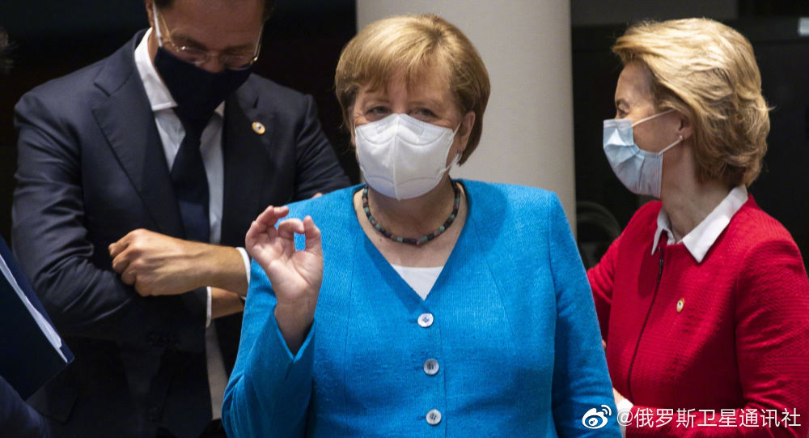

在下确实精力不够，这种问题没法一一回复。

ETF拯救世界
2020-07-29
ETF拯救世界
2020-07-29
之前我怀疑过筋膜枪是不是智商税。这几天运动量大，拿出来用了一下觉得确实有用。肌肉酸痛的情况缓解很多。
但我依然认为贵的筋膜枪还是智商税……
但我依然认为贵的筋膜枪还是智商税……
ETF拯救世界
2020-07-29
有时候看网上有些人，尤其是某些在外企工作的人或者留学生说话，总是中文里夹着几个英文单词。看了看其中一部分英文单词好像又不是翻译不过来。怎么理解这种行为呢，将近一百年前钱钟书就给了很好的解释：
“他并无中文难达的新意，需要借英文来讲；所以他说话里嵌的英文字，还比不得嘴里嵌的金牙，因为金牙不仅妆点，尚可使用，只好比牙缝里嵌的肉馅，表示饭菜好吃，此外全无用处。”
“他并无中文难达的新意，需要借英文来讲；所以他说话里嵌的英文字，还比不得嘴里嵌的金牙，因为金牙不仅妆点，尚可使用，只好比牙缝里嵌的肉馅，表示饭菜好吃，此外全无用处。”
ETF拯救世界
2020-07-29
德国这个国家确实有点意思。
@俄罗斯卫星通讯社:
【美国正日渐丧失全球认可，而中国正在加油】美国在认可全球大国排名中正丧失其受欢迎度。美国民意测验和商业调查公司盖洛普（Gallup）的最新调查结果显示，来自135个国家/地区的大多数受访者最认可德国领导人的活动（占44％）。而美国在认可评级中排名第二（33％），远落后于第一名。 美国正日渐丧失全球认可，而中国正在加油
美国正日渐丧失全球认可，而中国正在加油
- 
ETF拯救世界
2020-07-29
前几天被老公骂的那位集美不知道今天有没有骂回去。

ETF拯救世界
2020-07-29
又是那个经典问题。最后一小时当然是系统问题，有关部门要负责。但是，作为考生，是不是应该早一点登录系统，一定要等到最后吗。就像绿灯过马路要不要左右看。错的不是你，但可以离危险远一点。
@观察者网:
【十年寒窗功亏一篑？多名陕西考生称因系统崩溃错过一本志愿填报】
据网友爆料 ，7月27日，在高考志愿填报的最后一小时，陕西省高考志愿填报系统崩溃，多名考生因此未能及时提交志愿，导致志愿填报失败。学生家长多次给各级教育部门打电话皆无回应。据了解，已有多名考生网友在网络上反应此问题。@荔枝新闻
#网曝陕西高考志愿填报系统崩溃#
 JSTV荔枝视频的秒拍视频
JSTV荔枝视频的秒拍视频
据网友爆料 ，7月27日，在高考志愿填报的最后一小时，陕西省高考志愿填报系统崩溃，多名考生因此未能及时提交志愿，导致志愿填报失败。学生家长多次给各级教育部门打电话皆无回应。据了解，已有多名考生网友在网络上反应此问题。@荔枝新闻
#网曝陕西高考志愿填报系统崩溃#
128万次播放
01:14
ETF拯救世界
2020-07-29
几张图告诉你什么叫追涨杀跌。
注意，主动基金持仓前十的算术平均市盈率是67.23
注意，主动基金持仓前十的算术平均市盈率是67.23

ETF拯救世界
2020-07-29
真的毫无必要。成年人了。
@观察者网:
【男子通过VPN“翻墙”访问境外色情网站 被行政处罚】据湖南津市公安公众号，市公安局网安大队民警在工作中发现，有人使用“翻墙”软件接入境外网络。办案民警迅速查明，家住某小区陈某自2019年2月向吴某购买“翻墙”软件后，在手机上使用该软件建立非法信道进行国际联网，并长期用于浏览境外色情网站。根据规定，给予违法行为人陈某警告处罚。
津市公安称，行为人如果非法出售可访问境外互联网网站的“VPN”翻墙服务，情节严重的，会处以三年以下有期徒刑或者拘役，并处或者单处罚金。如果行为人使用“翻墙”软件获得某些不实言论、信息后，进行散布、造谣，并造成不良影响的，可能会触犯“寻衅滋事罪”或者是“诽谤罪”等等。
网页链接
津市公安称，行为人如果非法出售可访问境外互联网网站的“VPN”翻墙服务，情节严重的，会处以三年以下有期徒刑或者拘役，并处或者单处罚金。如果行为人使用“翻墙”软件获得某些不实言论、信息后，进行散布、造谣，并造成不良影响的，可能会触犯“寻衅滋事罪”或者是“诽谤罪”等等。